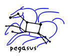

|  |

|
| Planning and execution in grids | |
Research
Cognitive grids are a collaboration between Grid and AI researchers at ISI aimed to provide intelligent middleware for Grid computing infrastructure. Our initial work has been exploratory and driven by the GriPhyN and the SCEC/IT projects.
One of the challenges for scientists is to configure complex workflows of components and to setup the complex scripts required to execute each component (e.g., FFT code) as a job on a specific grid resource (e.g., a linux cluster). One of the applications within the GriPhyN project is the Laser Interferometer Gravitational Wave Observatory (LIGO), where instruments collect data that needs to be analyzed in order to detect gravitational waves predicted by Einstein's theory of relativity. One of the tasks involved is pulsar searches in certain areas of the sky for a time period, where observations are processed through Fourier transforms and frequency range extraction software. This may involve composing a workflow of hundreds of jobs and executing them in appropriate computing resources on the grid, which gets unmanageable very fast. In addition, you have to spend a lot of time to become a knowledgeable grid user in order to do this, even if you have simple job workflows to run. Physicists may be happy to do this (though they would probably prefer not to), but other potential users of scientific software may not be. Last but not least, using the grid is not free and means sharing resources with others, so intelligent middleware can make grids more efficient and accessible overall.
Our approach to these problems is to use automated planning techniques combined with knowledge representation and reasoning to specify the capabilities and requirements of these components as well as the capabilities offered by computing and storage resources available on the grid. We are developing Pegasus (Planning for Execution in Grids), a configurable system that can generate and execute complex workflows on the Grid. Pegasus includes an AI planner that uses information about the capabilities and requirements of each domain-specific component (e.g., FFT code or simulation code) in terms of meta-data requirements and results (e.g., a seismic hazard simulation takes a fault model as input) as well as resource requirements. Pegasus uses the Metadata Catalog Service (MCS), newly developed at ISI, to perform the mapping between application-specific attributes and logical file names of existing data products. AI-based planning technologies are used to construct an end-to-end workflow, taking into account preferences and other heuristics to minimize execution time or data movement. Pegasus also contains a Virtual Data Language generator that can populate the Chimera catalog with newly constructed derivations. Finally, Pegasus generates the necessary submit files and sends the Workflow to the grid's DAGMan for execution. We have used Pegasus for LIGO pulsar search, using LDAS and compute and storage resources at Caltech, University of Southern California, University of Wisconsin Milwaukee, University of Florida, and NCSA. This application was demonstrated at the Supercomputing Conference (SC-2002).
Our future plans include incorporating these techniques in the new service-based grid architecture proposed by OGSA (Open Grid Services Architecture), dynamic planning and scheduling techniques for robust execution of job workflows, and using the grid as a robust infrastructure for distributed heterogeneous agent communities. Our work on Pegasus forms part of our work on the Cognitive Grids project, along with work on interactive workflow construction and ontologies for resource match-making.